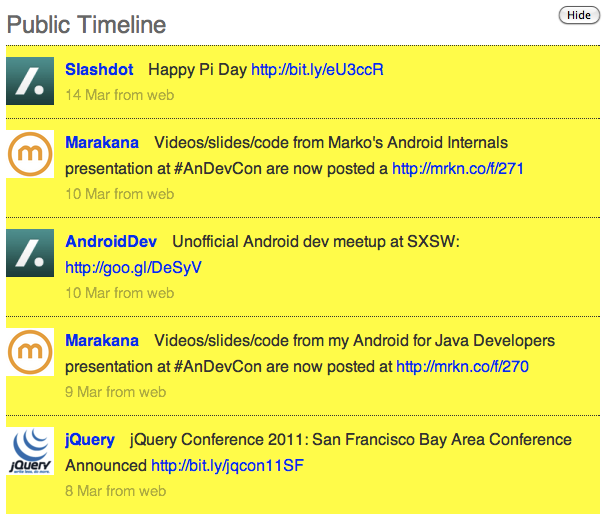

Jquery Tutorial : Index
In this chapter, we are going to discuss why learning about jQuery is a good investment, what are its strength, competitive advantages to other JavaScript libraries out there and what are the advantages of using jQuery rather than pure JavaScript
We are also going to discuss about how to start with jQuery (discussing about where to get the library, how to be "ready" to use it in your web pages and where to look for useful complementary learning resources)
Along with this class and courseware, you will find a lot of great learning resources out there:
- The jQuery documentation: http://api.jquery.com
- The jQuery forum: http://forum.jquery.com/
- The jQuery mailing list archives: http://docs.jquery.com/Discussion#Archives
- The jQuery IRC channel: http://docs.jquery.com/Discussion#Chat_.2F_IRC_Channel
- Stackoverflow.com: http://stackoverflow.com/questions/tagged/jquery (John Resig hangs out there sometimes)
- Aug. 22, 2005
- Everything started here where John Resig, creator of jQuery, showed us a few ideas of what would become jQuery(http://ejohn.org/blog/selectors-in-javascript/)
- Jan. 14, 2006
- jQuery announced
- Jan. 24, 2006
- Creation of the jQuery Blog
- Jan. 27, 2006
- Creation of the jQuery mailing list
- Aug. 26, 2006
- First stable version of jQuery, v1.0 released
- Jan. 14, 2007
- Anniversary of jQuery. v1.1 released: significant performance improvements; reduced, simplified API
- Sep. 10, 2007
- v1.2 released: additional DOM traversal and manipulation methods; improved animation control; JSONP support; XPath selectors removed
- Sep. 17, 2007
- First version of jQuery UI released: fully themed interaction and widget library built on top of jQuery
- Jan. 14, 2009
- Third anniversary of jQuery. v1.3 released: CSS selector engine, Sizzle, available as a standalone component; "live event" binding; improved cross-browser event abstraction; significant performance improvements
- Mar. 6, 2009
- jQuery UI 1.7 released: ThemeRoller theme generation; new project hosting domain
- Jan. 14, 2010
- Fourth anniversary of jQuery. v1.4 released: more performance improvements; more DOM traversal and manipulation methods; more animation control; more moreness
- Jan. 21, 2010
- jQuery.org goes live (site containing resources for jQuery and related projects)
- Mar. 23, 2010
- jQuery UI 1.8 released: new utilities; new widgets; upgraded widget factory; more modular core
- Jan. 31, 2011
- v1.5 released: deferred objects; improved, extensible Ajax support
- May. 3, 2011
- v1.6 released: major rewrite of the Attribute module plus performance improvement
![[Note]](../images/note.png) | Note |
|---|---|
At the time of this writing, the latest version of jQuery is v1.6.1. However, this course is focused on the latest branch of v1.4 ⇒ v1.4.4 |
jQuery is a JavaScript library that simplifies:
- HTML element selection and document object model (DOM) traversal
- Element creation, deletion, and modification
- Event handling
- Animation
- Ajax interactions
- Custom widget integration (date picker, slider, dialogs, tabs, etc…) with jQuery UI
jQuery is:
- Free!
- Open-source and available under both MIT and GPL licences
- Only 29Kb (minified and gzipped, ready for production) ⇒ lightweight footprint
- Cross-browser compatible
- Extensible! You can write your own plugins or pick the one that interests you among a large list of existing ones.
jQuery is written entirely in JavaScript, so you could replicate any of its functionalities yourself directly in JavaScript.
- Why reinvent the wheel?
- jQuery is tested and used by thousands of web sites.
- jQuery is optimized for performance by JavaScript experts.
jQuery is also designed to circumvent cross-browser compatibility problems, such as:
- Events not fired in some browsers: http://quirksmode.org/dom/events/index.html
-
Adding event listeners (
addEventListenerstandard way vsattachEvent) -
Getting the cursor position (
e.pageXande.pageYvse.clientXande.clientY) -
Changing the CSS float (
element.style.styleFloatvselement.style.cssFloat) - So much to remember…
- The jQuery team works to provide a consistent interface for maximal functionality across different browsers.
jQuery supports the following browsers:
- Firefox 2.0+
- Internet Explorer 6+
- Safari 3+
- Opera 10.6+
- Chrome 8+
Note You can see a list of known jQuery browser issues at URL: http://docs.jquery.com/Known_Issues
John Resig, creator of jQuery, gave an interesting talk at Yahoo addressing browser inconsistencies: "The DOM is a mess" (http://ejohn.org/blog/the-dom-is-a-mess/)
- With so many existing JavaScript libraries out there, why should you consider using jQuery?
- Some simple research on Google Trends comparing jQuery to other JavaScript libraries shows the following:
- The job market factor is also important: There are more job offers in JavaScript related to jQuery.
jQuery is used by big companies such as: Google, Microsoft, Nokia, Dell, Bank of America, Major League Baseball, Digg, NBC, CBS, Netflix, Technorati, Mozilla.org, Wordpress, Drupal and so on…
Note Microsoft now includes jQuery with its Visual Studio and ASP.NET MVC framework.
Large community and developer pool ⇒ support is huge!
- Blog posts
- Tutorials
You can start with jQuery in three easy steps:
- Access the jQuery library and include it in your page.
- Make sure the page is ready.
- Execute some jQuery code!
From the http://jquery.com/ web site, you can download two versions of the code:
- Production
- Minified JavaScript (illegible) for use in production, lightweight footprint (29Kb) ⇒ Saves bandwidth for you and speeds up page requests for your users.
- Development
- Uncompressed JavaScript for use in development ⇒ Very useful if you need to look at how jQuery is implemented.
To include the jQuery library in your page:
<head> <title>My jQuery page</title> <script type="text/javascript" src="jquery-1.4.4-min.js"></script>
 <script type="text/javascript" src="myscript.js"></script>
<script type="text/javascript" src="myscript.js"></script>  </head>
</head> This is your local copy of the jQuery library This is where you would write your own code using the jQuery library
![[Warning]](../images/warning.png) | Warning |
|---|---|
Some browsers do not handle “self-closing” <script type="text/javascript" src="jquery-1.4.4-min.js" /> To ensure proper loading of your script, alway use an explicit close tag, like this: <script type="text/javascript" src="jquery-1.4.4-min.js"></script> |
As an alternative to serving the jQuery library from your own server, you can choose to use the hosted jQuery library from Google Content Delivery Network (CDN).
- A single address to access - chances are that users already have this library in their cache if they have visited a site using the jQuery library (hosted by Google CDN) ⇒ Your page loads faster and you spend less on the bandwidth
<head> <title>My jQuery page</title> <script type="text/javascript" src="https://ajax.googleapis.com/ajax/libs/jquery/1.4.4/jquery.min.js"></script>
<script type="text/javascript"
src="myscript.js"></script>
</head>
![[Tip]](../images/tip.png) | Tip |
|---|---|
When loading jQuery from CDN, your <script type="text/javascript"
src="https://ajax.googleapis.com/ajax/libs/jquery/1.4/jquery.min.js"></script> |
Loading the jQuery library creates a single function object named
jQuery.All jQuery functionality is provided through the methods and properties of the
jQueryfunction object. For example:jQuery('li').css('background-color', 'yellow');
As a convenience, jQuery also provides an alias for the
jQueryfunction object named$.Anywhere you might use
jQuery, you can use$. For example:$('li').css('background-color', 'yellow');
Many other JavaScript libraries, such as Prototype, also use $ as a function or variable name. If you need to use one of the libraries in conjunction with jQuery, you can have jQuery relinquish the $ alias by executing:
jQuery.noConflict();
Before jQuery can manipulate the elements in your document, they must be created.
-
By placing the jQuery code in the
<script>element inside the<head>of your document, the jQuery code gets a chance to execute before the rest of the document is loaded and rendered by the browser.
-
By placing the jQuery code in the
A common pure JavaScript approach is to register an
onLoadhandler on the<body>element to execute your JavaScript code, which triggers when the page has loaded and rendered all objects on the page.-
A disadvantage of the
onLoadevent is that it isn’t triggered until all elements have loaded. For example, it isn’t triggered until all<img>data has been retrieved from the server. - This keeps us from accessing elements that haven’t been created yet, but it also blocks us — and the user — from manipulating the page until all data has been retrieved from the server.
-
A disadvantage of the
jQuery provides a mechanism that allows JavaScript code to begin execution faster.
-
The
readyevent occurs when the page DOM is complete, but some elements — such as<img>elements — might still be awaiting data from the server to render. - You can register a callback function (also known as a handler) to execute when the document DOM is ready:
$(document).ready(function() { //Perform here all the jQuery magic });jQuery also provides a shortcut, in which you provide your callback function as the sole argument to
$:$(function() { /* jQuery code */ });-
The
| Note |
|---|---|
Observe that we are actually providing a reference to an anonymous function as the argument to the |
It’s common to place the
<script>elements that load external JavaScript files in the<head>of a document.- Structurally, this is a good location, as it separates the behavior (the JavaScript code) from the content (the HTML elements and their content).
- Functionally, this can be a problem. The browser blocks (pauses) to load the script before it continues loading and rendering the rest of the document.
To increase page responsiveness, consider placing your
<script>element(s) just before the</body>close tag.- This causes the browser to load and render all other page content before loading and executing your JavaScript code.
- If you follow the design pattern of progressive enhancement, this gives users a functional web page they can browse before the interactive components implemented in JavaScript are fully loaded and initialized.
- The page feels “more responsive” to users.
Let us consider a page containing the following portion of HTML code:
<ol id="statuses"> <li class="status"> <div class="data"> <span class="user"><a href="#" class="url"> <img width="48" height="48" src="images/slashdot.png" alt="" class="photo"></img> <span class="nickname">Slashdot</span></a></span> <span class="text">Happy Pi Day <a href="http://bit.ly/eU3ccR" class="url">http://bit.ly/eU3ccR</a> </span> </div> <div class="meta"> <span class="timestamp">14 Mar</span> <span class="source">from web</span> </div> </li> <!-- Other <li class="status">...</li> would go here --> </ol>This HTML page would include the jQuery library and a JavaScript file containing these operations:
$(document).ready(function(){ $('.status').css('backgroundColor', 'yellow'); });This is what it would look like in a browser:

| Note |
|---|---|
The result of this simple script could be achieved more easily just by editing your document’s CSS, rather than running jQuery code. The advantage of jQuery will become more apparent as we create more complex and dynamic effects. |